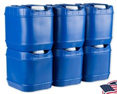
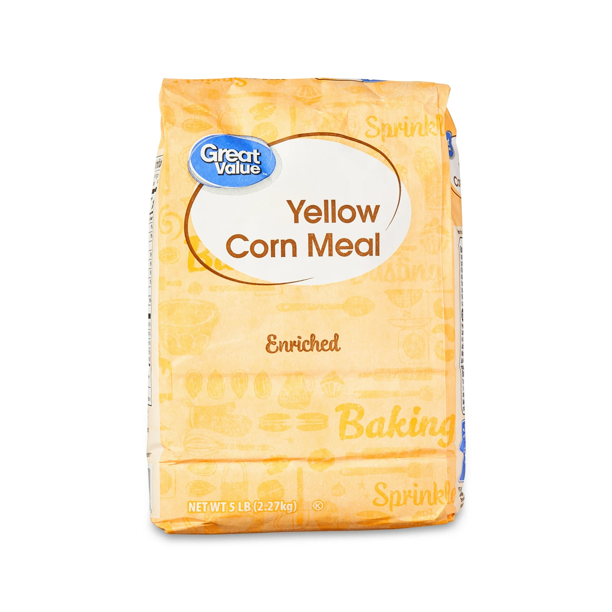
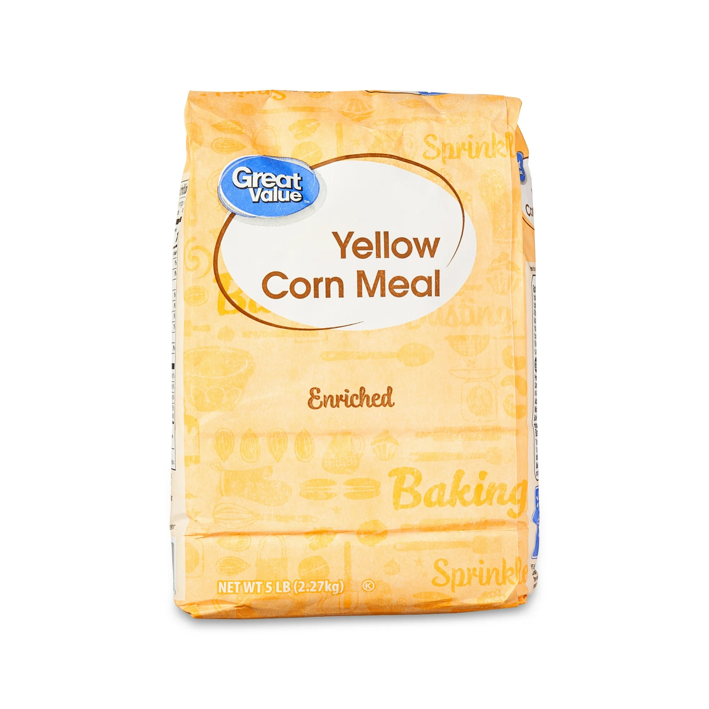
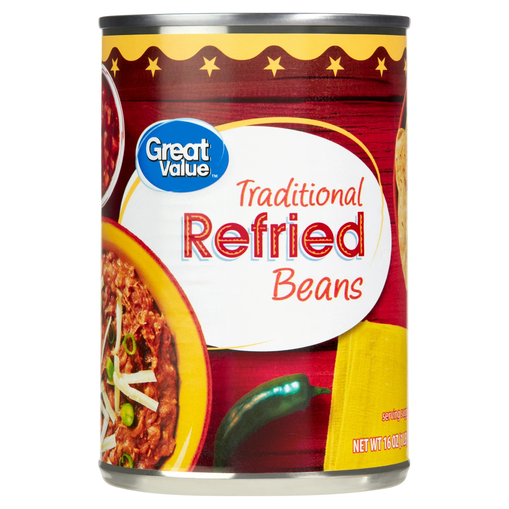

Overview
Purpose
This Emergency Preparedness website provides practical advice and monthly goals for building and maintaining essential supplies such as food, water, and first aid. It helps families plan and stay safe through emergencies.
Audience
The intended audience includes individuals and families interested in disaster preparedness, from beginners to experienced preppers who want monthly guidance to stay organized.
Branding
Website Logo
Style Guide
Color Palette
| Primary | Secondary | Accent 1 | Accent 2 |
|---|---|---|---|
Typography
Heading Font:
Anton
Paragraph Font:
Lato, Roboto, Open Sans
Navigation
Site Map
Content
Home page
Welcome to your Emergency Preparedness site. This site offers monthly advice to build your food, water, and emergency supplies gradually and effectively.
Images for the Home page

Janeiro page
January focuses on storing rice and cornmeal, planning water supply, and having appropriate clothing and shelter.
Images for the Janeiro page
 



Fevereiro page
February focuses on building up your beans and legumes supply as a protein source.
Images for the Fevereiro page

Wireframes
Home
Wireframe details for the Home page.
Janeiro
Wireframe details for Janeiro page.
Fevereiro
Wireframe details for Fevereiro page.